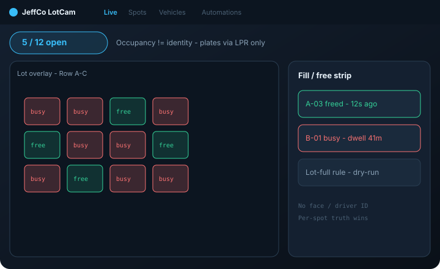
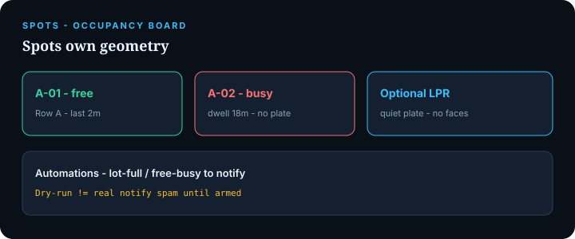

LotCam
Parking occupancy console — free/busy spot board, dwell, and optional plates when LPR is present.
For lot managers who need a live map of spaces — not driver identity and not a generic Cam grid.

What it does
LotCam runs a parking occupancy board: draw spots, see free/busy overlays, track dwell, and notify on fill/free or lot-full.
Spots own geometry and occupancy truth. Vehicles hold dwell (and plates only when the LPR plugin is linked). Faces and driver recognition are out of scope.
LPR is optional sibling glue — LotCam works without plates. Counts can summarize; per-spot truth wins when spots are drawn.
Capabilities
Day-one surface vs Advanced / gated — from Clarity GH Pages pack.
Day-one surface
Live
Day oneLot overlay, {free}/{total} open chip, fill/free strip
Spots
Day oneOccupancy board / map
Vehicles
Day oneDwell + optional plate attach
Automations
Day oneFree/busy / lot-full → notify (dry-run)
Wizard
Day oneFeed → draw spots → occupancy proof → optional LPR → Notify me
Advanced / gated
Dense PARCS / payment
AdvancedGate cosplay — advanced only
Reserved-spot violations
AdvancedWhen armed deliberately
Face / driver ID
BLOCKNever day one — Compliance forever gate
How to use it
First-run (wizard)
Add a feed
Covering the lot.
Draw spots
Rows optional.
Occupancy proof
Catch free→busy or busy→free; Continue locked until proof.
Optional LPR link
Plates if plugin present; skip freely.
Notify me
On spot or lot-full (dry-run) or Skip.
Daily loop
Glance Live
Free/busy map and open-count chip.
Manage Spots
Board; investigate odd occupancy.
Check Vehicles
Long dwell / plate attaches.
Tune Automations
After dry-run.
Badge
Lot-full, camera down, notify fail — not sleeping workers.
Honesty / trust
Clarity LotCam honesty — occupancy, not identity.
- Occupancy ≠ identity. Free/busy from presence — not “recognized the driver.”
- Plates only via LPR plugin — LotCam does not invent OCR.
- No face ID day one or ever without Compliance.
- Dry-run ≠ real notify spam until armed.
- Per-spot truth preferred over fake-precise counts when geometry exists.
Screenshots
Brochure frames elevated from Design UI mocks.

Lot-full dry-run rules
From Design-jeffco-lotcam-ui-mocks/
Notify me finale
Get started
Wire module path / docs when Builder queues the Pages deploy.